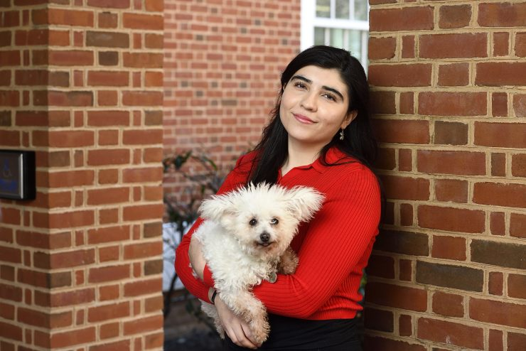

Alessa and research assistant Frida
Alessa Carbo
AI safety & Alternative Proteins
I'm a CS student at Johns Hopkins university. I research mechanistic interpretability, learning dynamics, and AI safety under the mentorship of Eric Nalisnick. My recent work focuses on the identifiability in interpretability methods such SAEs, and I'm also working on characterizing learning dynamics of "weird" and safety-relevant generalization phenomena such as Emergent Misalignment and Subliminal Learning through a Neural Tangent Kernel lens.
This summer I'll be a MATS scholar under the mentorship of Stephen Casper, where I'll be working on more robust guarantees for tamper-resistant models.
Beyond ML, I'm deeply involved in the alternative protein space. I co-president the JHU Alternative Protein Project and lead and lecture for our 3-credit course on future food manufacturing. I've organized many relevant events and public conversations with people in the field such as GFI's founder Bruce Friedrich, and an upcoming ML for food systems panel at the Food4Thought conference.
Some of my previous experience includes sign language processing. While I'm not as active in this line of work anymore, I believe it's an underserved area that deserves more attention, and one that presents very interesting challenges.